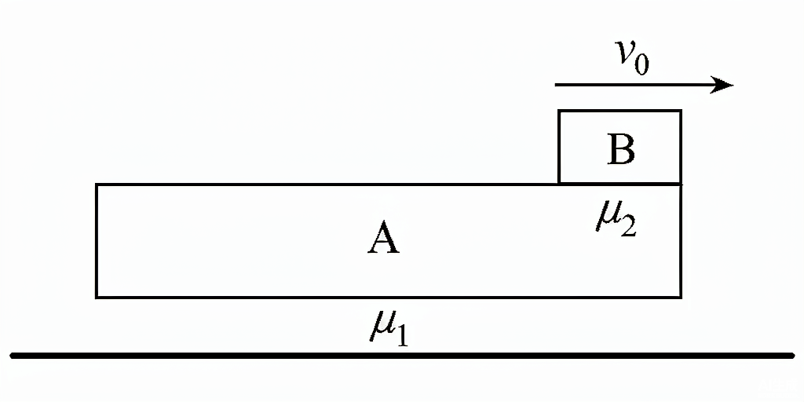

1功（Work）
定义
一个物体受到力的作用，并在力的方向上发生了一段位移，就说这个力对物体做了功。
做功的两个不可缺少的因素：① 作用在物体上的力；② 物体在力的方向上发生的位移。
计算公式
$$W = F s \cos\alpha$$
其中：
- $F$：恒力大小（N）
- $s$：位移大小（m）
- $\alpha$：力 $F$ 与位移 $s$ 方向的夹角
📌 正负功的判断（看 $\alpha$ 角）：
| 夹角 $\alpha$ | $\cos\alpha$ | 功 $W$ 的正负 | 物理意义 |
|---|
| $\alpha = 0^\circ$ | $1$ | $W = Fs > 0$（正功） | 力推动物体运动 |
| $0^\circ < \alpha < 90^\circ$ | 正 | $W > 0$（正功） | 力促进物体运动 |
| $\alpha = 90^\circ$ | $0$ | $W = 0$（不做功） | 力与位移垂直 |
| $90^\circ < \alpha < 180^\circ$ | 负 | $W < 0$（负功） | 力阻碍物体运动 |
| $\alpha = 180^\circ$ | $-1$ | $W = -Fs$（最大负功） | 力完全阻碍运动 |
⚠️ 常见误区：
- 负功不是"功为负值没有意义"，而是表示阻力做功或物体克服该力做功（如摩擦力做负功 = 物体克服摩擦力做功）。
- 公式 $W = Fs\cos\alpha$ 只适用于恒力做功；变力做功需用动能定理或图象（$F-s$ 图面积）求解。
- 合外力做功 = 各分力做功的代数和，即 $W_{\text{合}} = W_1 + W_2 + \cdots$
例1：水平面上一个 10 kg 的物块，受 50 N 水平拉力，沿拉力方向移动 4 m，拉力与位移方向夹角 0°，求拉力做的功。
解：$W = F\cdot s\cdot\cos\alpha = 50 \times 4 \times \cos0^\circ = 50 \times 4 \times 1 = \mathbf{200\ J}$
答：拉力做功 200 J（正功）。
例2：人用 100 N 的力斜向上（与水平成 30°）拉一个箱子前进 5 m，求拉力做的功。
解：$W = F\cdot s\cdot\cos\alpha = 100 \times 5 \times \cos30^\circ = 500 \times 0.866 \approx \mathbf{433\ J}$
3动能和势能（Energy）
动能（Kinetic Energy）
物体由于运动而具有的能量。
$$E_k = \dfrac{1}{2} m v^2$$
$m$：质量（kg）；$v$：速度（m/s）；单位：焦耳（J）。动能是标量，只有正值。
重力势能（Gravitational Potential Energy）
物体由于被举高而具有的能量。
$$E_p = m g h$$
$h$：相对于零势能面的高度（m）；$g$：重力加速度（通常取 $9.8\ \text{m/s}^2$ 或 $10\ \text{m/s}^2$）。
⚠️ 注意：重力势能具有相对性，其大小取决于零势能面的选取；但重力势能的变化量与零势能面选择无关。
弹性势能（Elastic Potential Energy）
发生弹性形变的物体（如弹簧）具有的能量，与形变量有关：
$$E_{p\text{弹}} = \dfrac{1}{2} k x^2 \quad (k\ \text{为劲度系数，}x\ \text{为形变量})$$
📌 功和能的关系（核心）：
功是能量转化的量度。做了多少功，就有多少能量发生转化。
- 合外力做功 = 动能变化量：$W_{\text{合}} = \Delta E_k$（动能定理）
- 重力做功 = 重力势能减少量：$W_G = -\Delta E_p$
- 除重力外其他力做功 = 机械能变化量：$W_{\text{其他}} = \Delta E_{\text{机}}$
例4：质量 2 kg 的物体以 3 m/s 的速度运动，求其动能。
解：$E_k = \tfrac{1}{2}mv^2 = \tfrac{1}{2} \times 2 \times 3^2 = 1 \times 9 = \mathbf{9\ J}$
4机械能守恒定律
内容
在只有重力或弹力做功的系统内，动能与势能可以相互转化，但机械能的总量保持不变。
表达式
$$E_{k1} + E_{p1} = E_{k2} + E_{p2}$$
或写成变化量形式：
$$\Delta E_k = -\Delta E_p \quad (\text{动能增加量} = \text{势能减少量})$$
✅ 适用条件（关键！）：
只有重力或弹力（系统内的保守力）做功，其他力不做功或做功代数和为零。
- ✓ 自由落体、竖直上抛、平抛、斜抛运动 — 只有重力做功，守恒
- ✓ 光滑斜面上滑动 — 只有重力做功，守恒
- ✓ 光滑圆弧轨道内运动 — 只有重力做功，守恒
- ✗ 有摩擦力做功 — 不守恒（机械能转化为内能）
- ✗ 有外力（如拉力、推力）做功 — 不守恒（除非外力功为零）
⚠️ 机械能守恒 vs 动能定理 的选择：
- 若满足守恒条件，用机械能守恒更简洁（不需分析过程，只看初末状态）
- 若有非保守力做功，必须用动能定理或功能关系：$W_{\text{合}} = \Delta E_k$
例5：从 20 m 高处自由落下的物体（$g=10\ \text{m/s}^2$），求落地时的速度。（$m$ 未知，可消去）
解：初态 $E_{k1}=0,\ E_{p1}=mgh$；末态 $E_{k2}=\tfrac{1}{2}mv^2,\ E_{p2}=0$
机械能守恒：$mgh = \tfrac{1}{2}mv^2 \Rightarrow v = \sqrt{2gh} = \sqrt{2\times10\times20} = \sqrt{400} = \mathbf{20\ m/s}$
答：落地速度 20 m/s（与质量无关！）
例6：小球从光滑斜面顶端由静止滑下，斜面高 h=5 m，求滑到斜面底端的速度。
解：只有重力做功，机械能守恒
$mgh = \tfrac{1}{2}mv^2 \Rightarrow v = \sqrt{2gh} = \sqrt{2\times10\times5} = \sqrt{100} = \mathbf{10\ m/s}$
注：结果与斜面倾角、长度无关，只与高度差有关。
8动画演示 · 能量转化
以下两个动画均在只有重力或弹力做功的条件下运行，机械能守恒。观察重力势能 $E_p$、动能 $E_k$ 与总机械能 $E$ 的实时变化。
动画 1 · 典型模型示例：弹簧 + 水平 + 1/4 圆弧
如图：物块由压缩弹簧释放后，在水平轨道上滑行至 $B$ 点，再沿 1/4 圆弧爬升到 $C$ 点。三种能量依次转化 — 弹性势能 → 动能 → 重力势能。
📌 能量转化分析（按图示过程）：
- 初始状态（图中所示）：弹簧被压缩，物块在 $A$ 点静止。
能量分布：$E_{p弹} = \tfrac12 k x^2$（最大），$E_k = 0$，$E_p = 0$。
- 阶段① 弹簧释放：弹簧恢复原长，将弹性势能转化为物块动能。
$E_{p弹} \to E_k$，物块获得水平速度 $v_A = \sqrt{\dfrac{k}{m}}\,x$。
- 阶段② 水平滑行（$A \to B$）：轨道光滑，动能不变。
$E_k = \tfrac12 m v_A^2$，到达 $B$ 点速度不变。
- 阶段③ 沿 1/4 圆弧爬升（$B \to C$）：动能转化为重力势能。
$E_k \to E_p$，到 $C$ 点升高 $R$（圆弧半径）。
- 全过程：只有弹力、重力做功，机械能守恒：
$$E_{p弹} + E_{k,A} + E_{p,A} \;=\; E'_{p弹} + E_{k,B} + E_{p,B} \;=\; E''_{p弹} + E_{k,C} + E_{p,C}$$
数值上：$\tfrac12 kx^2 \;=\; \tfrac12 m v_B^2 \;=\; mgR + \tfrac12 m v_C^2$（若 $C$ 处仍有速度）。
动画 2 · 弹簧振子（弹性势能 ↔ 动能）
物块在光滑水平面上与轻弹簧相连，从最大压缩处由静止释放。弹簧恢复时弹性势能转化为动能；过平衡位置后动能又转化为弹性势能。
动画 3 · 弹簧 + 水平轨道 + 1/4 圆弧组合模型
经典模型：弹簧压缩后释放 → 物块在水平面上滑行（B 点）→ 沿 1/4 圆弧爬升到 C 点（最高点）。
三种能量依次转化：弹性势能 → 动能 → 重力势能。全过程机械能守恒（轨道光滑）。
9板块模型 · 题型分类
板块模型（又叫「滑块—木板」模型）是动力学与功能关系的综合题型：木块 $B$ 以初速度 $v_0$ 滑上长木板 $A$，$A$ 平放在地面上，分析摩擦力、加速度、共同速度、热量、位移等问题。

如图所示：地面（有摩擦，木板下面 $\mu_1$）、长木板 $A$（上面 $\mu_2$）、小物块 $B$（初速度 $v_0$）
🎯 模型核心：四个物理量 + 两个方程
| 分析项 | 物块 $B$ | 木板 $A$ | 地面是否参与 |
|---|
| 受力 |
$A$ 对 $B$ 的摩擦力 $f_2 = \mu_2 m_B g$ |
$B$ 的反作用力 $f_2' = f_2$；
地面对 $A$ 的摩擦力 $f_1$ |
若 $A$ 动了 → $f_1 = \mu_1 (m_A+m_B)g$ |
| 加速度 |
$a_B = \mu_2 g$（向左减速） |
$a_A = \dfrac{f_2 - f_1}{m_A}$（向右加速） |
假设 $A$ 加速，再验证 $f_2 > f_1$ |
| 临界条件 |
$B$ 能否带动 $A$：$a_B = a_A$ 临界 → 之后两者共同运动 |
| 共同速度 |
动量守恒：$m_B v_0 = (m_A+m_B)v_{\text{共}}$，得 $v_{\text{共}} = \dfrac{m_B v_0}{m_A+m_B}$ |
| 产生的热量 |
$Q = f_2 \cdot \Delta s_{\text{相对}} = \mu_2 m_B g \cdot (s_B - s_A)$ |
| 能量关系 |
$Q = \tfrac12 m_B v_0^2 - \tfrac12 (m_A+m_B) v_{\text{共}}^2$（动能损失 = 摩擦生热） |
📈 类型② 的 $v\text{-}t$ 图象（可交互）
下图按类型②参数（与下方例题一致）实时绘制 $B$（红）、$A$（蓝）两条速度线，阴影面积 = 相对位移 $\Delta s_{\text{相对}}$，两直线交点 = 共速时刻。
📂 题型分类（板块模型的 5 种典型情形）
类型 ① 地光滑 / A 自由：$B$ 减速不带动 $A$
条件：地面无摩擦 ($\mu_1=0$)，或 $\mu_2$ 不足以克服 $A$ 与地面的最大静摩擦。
特点：$B$ 以 $a_B=\mu_2 g$ 减速滑到 $A$ 右端离开，$A$ 保持静止。
$$v_B' = \sqrt{v_0^2 - 2\mu_2 g L},\quad Q = \tfrac12 m_B v_0^2 - \tfrac12 m_B v_B'^2$$
类型 ② $B$ 带上 $A$ 一起动 → 共速
条件：地有摩擦 $\mu_1$，$B$ 能带动 $A$。先加速至 $v_{\text{共}}$，之后一起以某加速度减速或匀速。
关键：$B$ 减速、$A$ 加速，直到 $v_B = v_A$（达最大相对位移）。
$$v_{\text{共}} = \dfrac{m_B v_0}{m_A + m_B},\qquad \Delta s_{\text{相对}} = \dfrac{m_A v_0^2}{2\mu_2 g(m_A+m_B)}$$
⚠️ 判断共速前 $B$ 是否已滑出：若 $L \le \Delta s_{\text{相对}}$，则 $B$ 会在共速之前滑离 $A$。
类型 ③ 共速之后是否再次相对滑动？
条件：共速后整体是否匀速 / 减速，取决于地面是否有摩擦。
- 若地面 $\mu_1=0$ → 共速后整体匀速，$Q$ 止于共速时刻。
- 若地面 $\mu_1 \neq 0$ → 共速后整体一起减速直到停下，没有第二次相对滑动。
$$Q_{\text{总}} = \tfrac12 m_B v_0^2 - \tfrac12 (m_A+m_B)v_{\text{共}}^2 = \mu_2 m_B g \cdot \Delta s_{\text{相对}}$$
类型 ④ $B$ 没滑出：$A$ 是否撞墙 / 长度变化
条件：$L > \Delta s_{\text{相对}}$，$B$ 最终停在 $A$ 上某位置。
常考：$A$ 板右端撞到墙，求此时 $B$ 相对 $A$ 的位置 / 是否撞到 $A$ 的左端 / 共同速度等。
关键技巧：撞墙过程用动量守恒（墙不动）或系统合外力分析。
类型 ⑤ 初速 $v_0$ 加在 $A$ 上 / 两端都有 $B$
条件：$A$ 以 $v_0$ 动，$B$ 静止；或 $A$ 上两端放 $B_1,B_2$ 同时运动。
扩展：可能反向：先 $A$ 减速、$B$ 加速 → 共速 → 视情况共同减速。
共速判断：必先看 $\mu_2 m_B g$ 与 $\mu_1 (m_A+m_B)g$ 谁大——决定 $B$ 能否被带着动。
🔑 解题三步法
- 画图分析：标出 $B$、$A$ 的所有摩擦力方向（$B$ 受 $A$ 的向后摩擦；$A$ 受 $B$ 的向前摩擦 + 地面的向后摩擦）
- 判断加速方向：
- $B$：以 $a_B = \mu_2 g$ 减速（向左）
- $A$：先比较 $f_2$ 与 $f_1$（最大静摩擦）；若 $f_2 > f_1$，$A$ 加速；否则 $A$ 静止
- 列方程组：
- 运动学：$v = v_0 + at$，$s = v_0 t + \tfrac12 at^2$
- 动量守恒：用于求共速
- 能量关系：$Q = f \cdot \Delta s_{\text{相对}} = \Delta E_k$
📝 高考高频考点（在"功和能"专题里的命题方向）
- 共速时计算产生的热量 $Q = f \cdot \Delta s_{\text{相对}}$（最易错：用 $s_B$ 或 $s_A$ 单个位移代替）
- 共同加速度：地面有摩擦时共速后一起减速 $a = \mu_1 g$
- 图象法：画 $v\text{-}t$ 图，快速判断共速、相对位移、热量面积
- 功能关系：$W_{\text{合}} = \Delta E_k$ 与 $Q = \Delta E_k$（损失机械能）的分别使用
- 临界条件：$B$ 是否能带动 $A$ 的判别式 $f_2 > f_{1,\max}$
📝 典型例题（分段展开）
【例题 · 类型②】质量 $m_A=2$ kg、$m_B=1$ kg，$A$ 放在地面上 $\mu_1=0.1$，$B$ 在 $A$ 上 $\mu_2=0.4$，$B$ 以 $v_0=4$ m/s 滑上 $A$，$A$ 长 $L=2$ m。求：(1) 共速时间；(2) 共速时 $B$ 在 $A$ 上的位置；(3) 产生的热量。（$g=10\ \text{m/s}^2$）
$B$ 受 $A$ 的滑动摩擦（向后）：$f_2 = \mu_2 m_B g = 0.4\times1\times10 = 4$ N
$A$ 受 $B$ 的反作用（向前）$4$ N，与地面对 $A$ 的最大静摩擦比较：
$f_{1,\max} = \mu_1(m_A+m_B)g = 0.1\times3\times10 = 3$ N
因为 $f_2 = 4 > f_{1,\max} = 3$，所以 $A$ 被带动向右加速（地面滑动摩擦 $f_1 = 3$ N）
加速度：$a_B = \mu_2 g = 4\ \text{m/s}^2$（向左减速）；$a_A = (f_2 - f_1)/m_A = (4-3)/2 = 0.5\ \text{m/s}^2$（向右加速）
共速时间：$v_0 - a_B t = a_A t \Rightarrow t = v_0/(a_B+a_A) = 4/4.5 \approx 0.889\ \text{s}$
共速：$v_{\text{共}} = a_A t = 0.5\times0.889 \approx 0.44\ \text{m/s}$（地面有摩擦动量不守恒，按运动方程求）
相对位移：$\Delta s = s_B - s_A = v_0 t - \tfrac12(a_B+a_A)t^2 = \tfrac12 v_0 t \approx 1.78\ \text{m}$
产生的热量：$Q = f_2 \cdot \Delta s = 4\times1.78 \approx 7.1\ \text{J}$
是否滑出：$\Delta s = 1.78\ \text{m} < L = 2\ \text{m}$，$B$ 未滑出
答案：$t \approx 0.89\ \text{s}$，$v_{\text{共}} \approx 0.44\ \text{m/s}$，$\Delta s \approx 1.78\ \text{m} < L$，$B$ 未滑出，$Q \approx 7.1\ \text{J}$。
🏆 经典高考真题（板块模型）
2019·全国I·25质量 $M$ 的长木板静止在光滑水平面上，质量 $m$ 的物块以速度 $v_0$ 滑上木板，物块与木板间动摩擦因数为 $\mu$。求：物块在木板上滑行的相对位移 $\Delta s$ 与最终共同速度。
解析：地面光滑 → 系统动量守恒。
① 共速：$m v_0 = (M+m)v_{\text{共}} \Rightarrow v_{\text{共}} = \dfrac{m}{M+m}v_0$。
② 由动能定理 / 能量守恒：摩擦生热 $Q = \mu m g \cdot \Delta s = \tfrac12 m v_0^2 - \tfrac12(M+m)v_{\text{共}}^2$。
代入得 $\Delta s = \dfrac{M v_0^2}{2\mu g(M+m)}$。
答案：$v_{\text{共}} = \dfrac{m}{M+m}v_0$，$\Delta s = \dfrac{M v_0^2}{2\mu g(M+m)}$
2021·山东·16质量 $m_1=1$ kg 的木板 $A$ 静置于粗糙水平面（$\mu_1=0.1$），质量 $m_2=2$ kg 的物块 $B$ 以 $v_0=3$ m/s 滑上 $A$，两者间 $\mu_2=0.3$。（$g=10$）求：(1) $B$ 在 $A$ 上的加速度；(2) 经 $t=0.5$ s 时两者的速度。
解析：① $B$ 加速度 $a_B = \mu_2 g = 3\ \text{m/s}^2$（减速）。
② $A$ 受力：$B$ 对 $A$ 摩擦 $f_2 = \mu_2 m_2 g = 6$ N；地面最大静摩擦 $f_{1,\max} = \mu_1(m_1+m_2)g = 0.1\times3\times10 = 3$ N。因 $f_2>f_{1,\max}$，$A$ 加速，$a_A = (f_2-f_1)/m_1 = (6-3)/1 = 3\ \text{m/s}^2$。
③ $t=0.5$ s：$v_B = 3 - 3\times0.5 = 1.5\ \text{m/s}$；$v_A = 0 + 3\times0.5 = 1.5\ \text{m/s}$。恰好共速！
答案：(1) $a_B=3\ \text{m/s}^2$（减速），$a_A=3\ \text{m/s}^2$（加速）；(2) 经 $0.5$ s 两者均 $1.5\ \text{m/s}$，已达共速
2018·全国II·24质量 $M$ 的木板左端放质量 $m$ 的物块，木板长 $L$，物块与木板间 $\mu$、木板与地面间光滑。初态两者静止，现对物块施加水平向右恒力 $F$，使物块相对木板滑动。求物块滑到木板右端时的速度。
解析：对 $m$：$a_m = (F-\mu mg)/m$；对 $M$：$a_M = \mu mg/M$。
相对加速度 $a_{\text{rel}} = a_m - a_M$，滑行相对位移 $L$ 所用时间 $t = \sqrt{2L/a_{\text{rel}}}$。
此时 $v_m = a_m t$，即物块到达右端速度。
（若求木板速度：$v_M = a_M t$；热量 $Q = \mu mg L$）
答案：$v_m = \sqrt{\dfrac{2L(F-\mu mg)}{m} - \dfrac{2\mu mg L}{M}}$（化简后）；木板 $v_M = \mu mg\sqrt{\dfrac{2L}{M(F-\mu mg-\mu m g\cdot\tfrac{m}{M})}}$